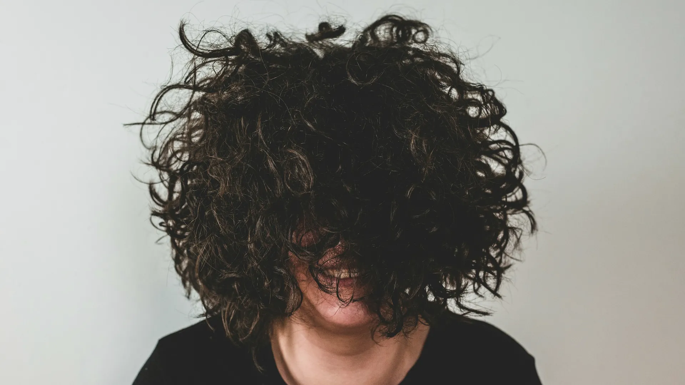
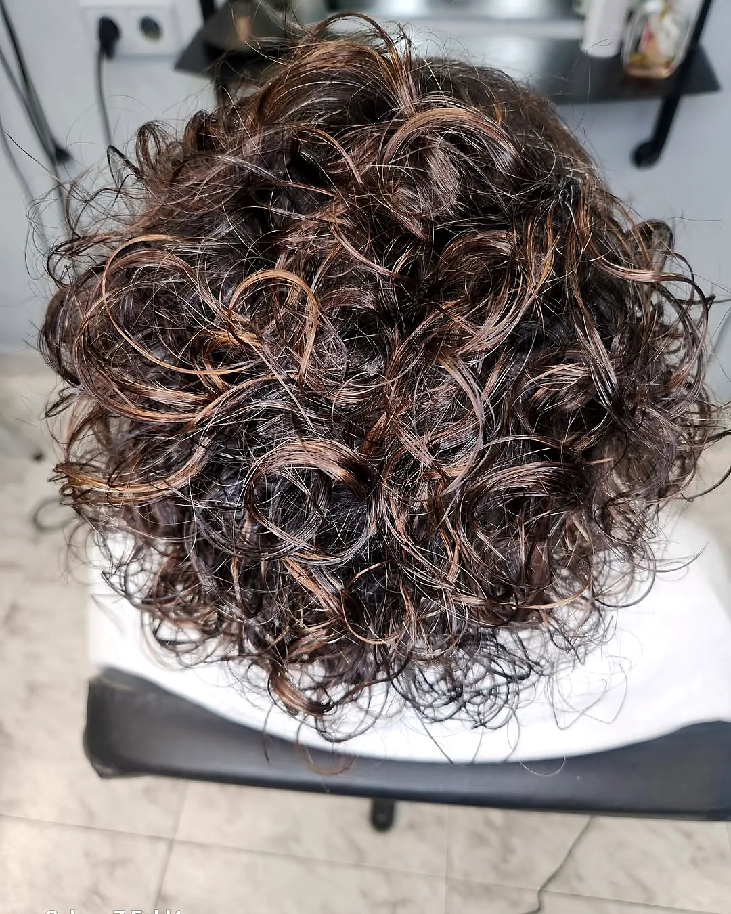
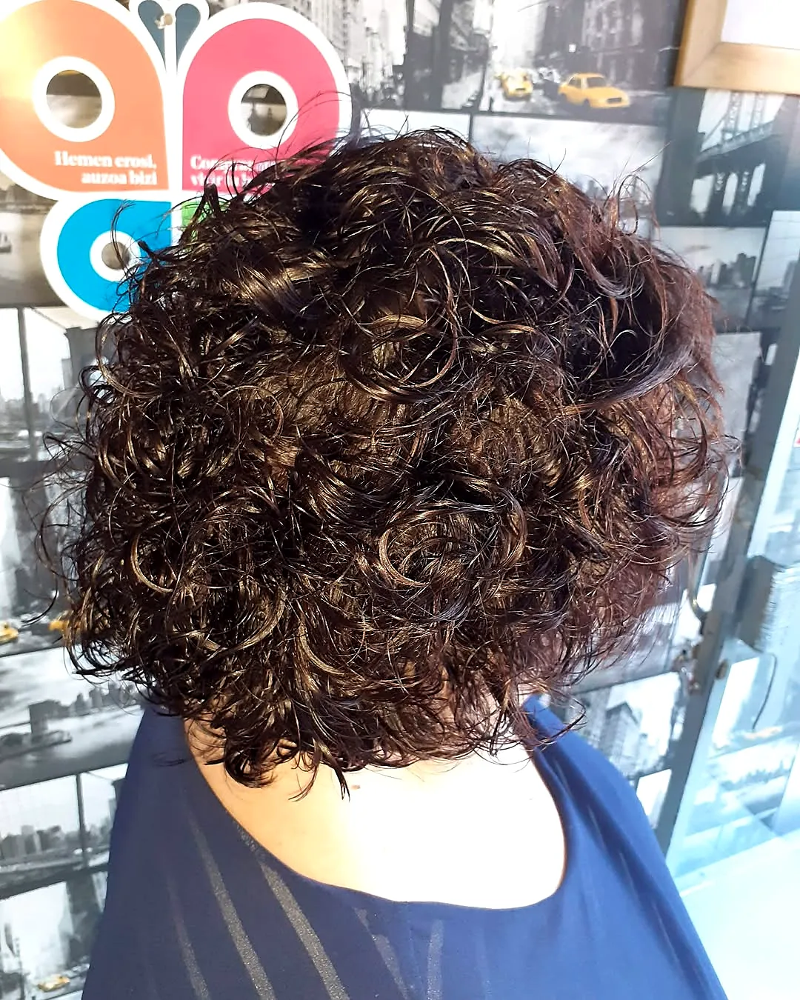

Corte para rizos
Ajustado para definir y repartir el volumen.
Consultar esta opción
Peluquería · Texturas
Cortes para rizo natural, permanentes y moldeados de larga duración. Entendemos que el cabello rizado necesita mimo, técnica y productos específicos.
Peluquería y estilismo
El cabello rizado es precioso… y también muy especial. Tiende a perder humedad, se encrespa con facilidad y necesita un corte que respete su forma. Por eso en La Pelu de Tod@s trabajamos el rizo con cuidado para que esté bien definido, conserve su hidratación y luzca con volumen y movimiento.
Si tu pelo es liso y sueñas con ondas, hacemos permanentes y moldeados que dan textura y cuerpo durante semanas. Y si tus rizos son naturales, te ayudamos a potenciarlos con el corte adecuado y una rutina que funcione de verdad.
Cada rizo es único y merece brillar con luz propia. Te hacemos un diagnóstico personalizado y te recomendamos tratamientos que respetan tu textura natural.
¿Te cuesta domarlos? ¿No sabes qué corte favorece a tus rizos? Te ayudamos con un diagnóstico personalizado.

«Es mi centro de belleza habitual desde que abrió. Siempre había querido probar otros colores en mi pelo, pero nunca me había decidido. Gracias a Cova me sentí muy a gusto y confiada. ¡Quise un cambio y a por ello que fuimos! He pasado del cabello liso y negro a una permanente, después a un rojo y ahora he regresado al liso.»
Por qué elegirlo
Rizos marcados, sin efecto nube.
Productos específicos que retienen la humedad.
Ni aplastado arriba ni triangular abajo.
Respetando la forma natural de cada rizo.
Permanentes y moldeados para dar cuerpo y ondas.
Te enseñamos a cuidarlo en casa paso a paso.
¿Es para mí?
Paso a paso
Tipo de rizo, porosidad, densidad y procesos previos.
Corte adaptado al rizo o preparación para el moldeado.
Hidratación, definición o permanente según el caso.
Para fijar la forma sin encrespar.
Productos y técnica para repetirlo en casa.
Elige
Cada opción tiene su botón: te abre WhatsApp con el mensaje escrito para que Cova te informe de precio y disponibilidad.
Ajustado para definir y repartir el volumen.
Consultar esta opciónRizo duradero para pelos lisos, del más suave al más marcado.
Consultar esta opciónOndas y cuerpo con un acabado natural.
Consultar esta opciónTratamiento intensivo para rizos secos o encrespados.
Consultar esta opciónHecho en La Pelu
Fotos de clientas y clientes de Cova publicadas en @lapeludet2. Pulsa para ampliar.
Consejos de Cova
Hidratación siempre: champús y mascarillas nutritivas, porque el rizo pierde humedad.
Evita frotar al secar: microfibra o camiseta de algodón, presionando suavemente.
Difusor, tu mejor aliado: temperatura baja-media para no encrespar ni abrir la onda.
Mima tus puntas: recortes regulares para mantener la forma.
Productos adecuados: cremas definidoras, geles suaves o aceites ligeros según tu rizo.
Con moldeado, evita tratamientos agresivos los primeros días y mantén la hidratación.

Sin humo
Mito«El pelo rizado no se puede cortar en capas.»
RealidadAl contrario: unas capas bien pensadas reparten el volumen y definen.
Mito«Las permanentes estropean siempre.»
RealidadCon un buen diagnóstico y productos actuales, el resultado es suave y cuidado.
Dudas frecuentes
¿No encuentras tu respuesta? Escríbenos y te contestamos encantadas.
Preguntar por WhatsAppDepende del tipo de pelo y de los cuidados. Te explicamos cómo alargarla.
Sí, organizando bien los tiempos entre un servicio y otro. Te asesoramos.
Cremas definidoras, geles suaves o aceites ligeros, según tu rizo. Te lo personalizamos.
Recortes regulares, cada 2–3 meses, mantienen la forma y evitan puntas abiertas.
Sí, ajustamos el corte para que quede definido y sin volumen excesivo.
Reserva
Ya hemos elegido «Rizos, permanentes y moldeados» por ti en el formulario. Martes a viernes de 9:30 a 18:00 en horario continuo. Sábados de 9:00 a 14:00, solo con cita previa.
Consultando horario…
Combina bien con
Escríbenos por WhatsApp y te respondemos en cuanto terminemos con la clienta que está en el sillón.
Síguenos
Trabajos recién hechos, trucos de Cova, promociones y los avisos de horario. Lo publicamos primero en Instagram y Facebook.